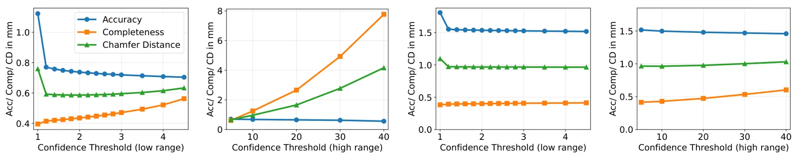
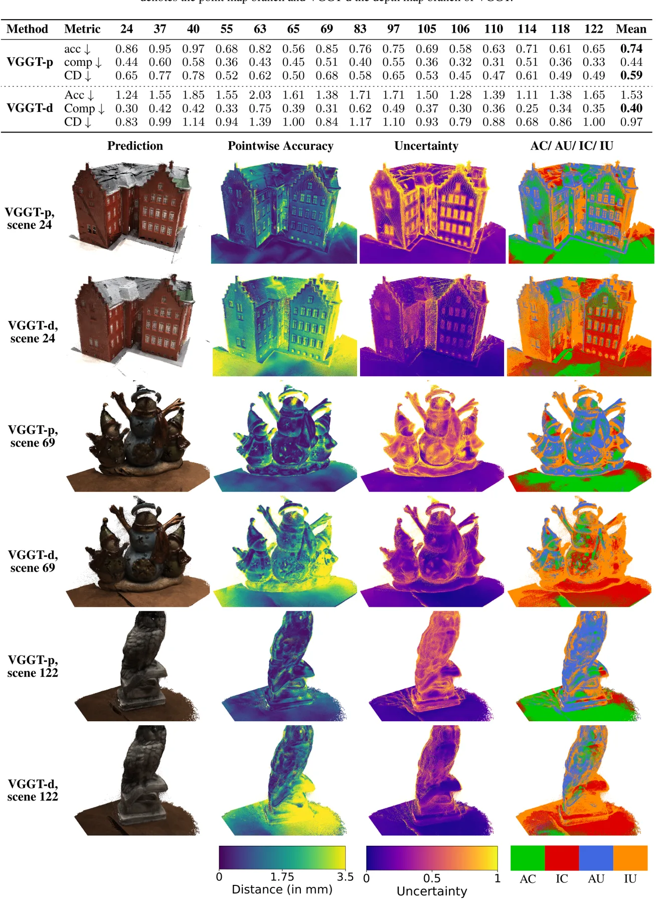
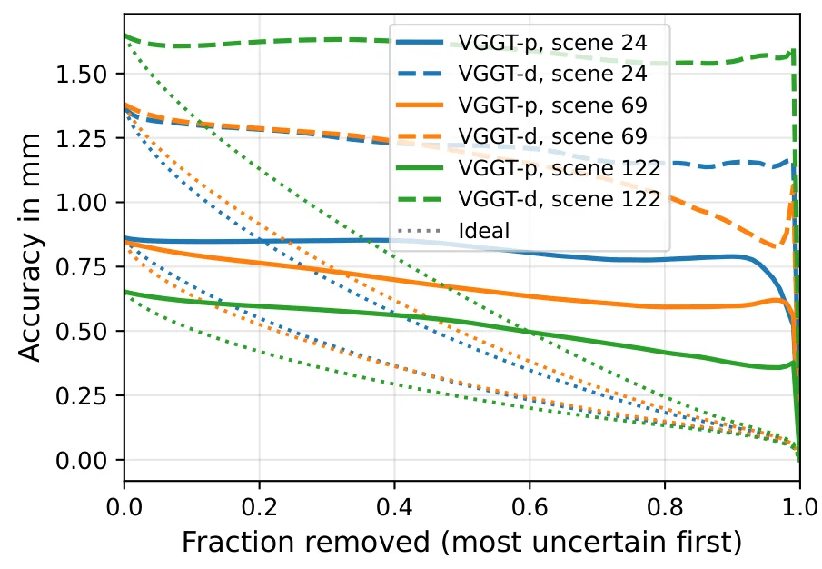
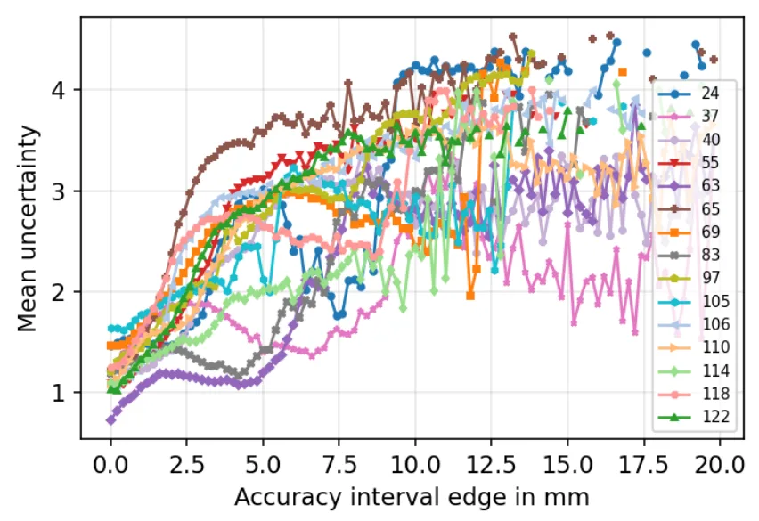
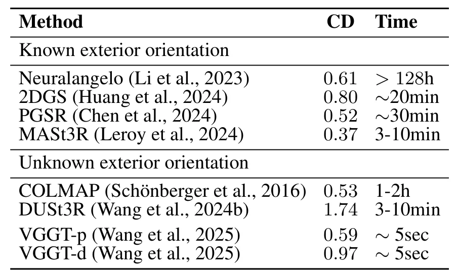
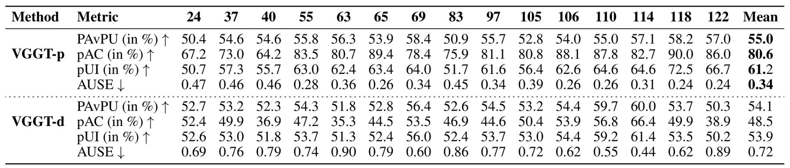

VGGT 的不确定性质量：基于 DTU 基准数据集的分析Uncertainty Quality of VGGT: An Analysis on the DTU Benchmark Dataset
不确定性估计对把 VGGT 类模型接入工程测量、点云过滤或 SLAM 前端很重要；但论文主要是分析与阈值研究，不是新的 SLAM/重建算法。
一句话工作总结
该工作评估 VGGT 输出置信度在 DTU 上的可用性，寻找过滤阈值，为 feed-forward 三维重建的质量控制提供依据。
摘要
VGGT 因 CVPR 2025 Best Paper 获得大量关注，与 DUSt3R 和 MASt3R 类似，它试图用统一的 feed-forward 网络替代 bundle adjustment 和特征匹配，直接从多张图像预测相机位姿、深度图和稠密三维结构，并可在一次前向传播中一致处理任意数量视图。对于摄影测量，高精度之外，高质量 uncertainty estimate 也很关键，因为它能建立信任并支持质量保证。本文研究 VGGT 不确定性预测质量，在 DTU benchmark 上分析原始输出，识别有效 confidence threshold，并展示提升 uncertainty quality 对改善三维重建精度有明显潜力。
Visual Geometry Grounded Transformer (VGGT) has already attracted a great deal of attention in a short period of time, not least due to the Best Paper Award at CVPR-2025. Similar to DUSt3R and MASt3R, VGGT aims to bring about a paradigm shift by replacing established methods like bundle adjustment and feature matching with a simple, unified, feed-forward neural network that predicts camera poses, depth maps, and dense 3D structure directly from multiple images of a scene in a few seconds. A key aspect is its ability to process an arbitrary number of views consistently in a single forward pass without any post-processing or iterative optimization. For photogrammetry, this opens new possibilities for real-time, scalable, and accessible 3D reconstruction. In this context, not only high reconstruction accuracy but also high-quality uncertainty estimates are crucial, as they foster trust and enable robust quality assurance. This paper therefore investigates the quality of VGGT's uncertainty predictions. The analysis identifies an effective confidence threshold for filtering VGGT's raw output and demonstrates that enhancing uncertainty quality holds strong potential for improving the accuracy of its 3D reconstructions.
中文解读摘录
- 链接：abs / PDF；作者：Markus Hillemann, Robert Langendörfer, Steven Landgraf, Markus Ulrich；类别：cs.CV, cs.AI；采集 score=7。
- 核心思路：VGGT 等 feed-forward 多视图几何模型在几秒内输出相机位姿、深度和稠密结构；本文关注其 uncertainty prediction 是否足以支撑质量保证。
- 方法要点：在 DTU benchmark 上分析 VGGT 原始输出置信度，识别有效 confidence threshold，并说明提升 uncertainty quality 可进一步改善三维重建精度。
- 关注点：对把 VGGT/DUSt3R/MASt3R 类模型接入工程测量或 SLAM 前端很重要；置信度能否作为点云过滤、BA 初始化权重、重建质量告警的依据值得继续验证。
图表/页面预览

{kind=link}

{kind=link}

{kind=link}

{kind=link}

{kind=link}

{kind=link}
